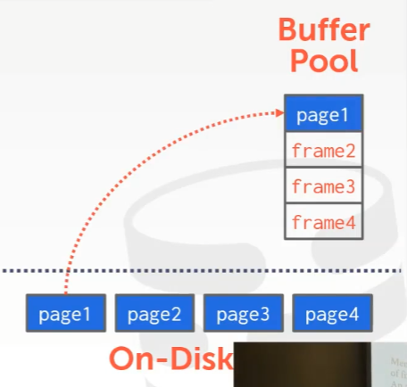
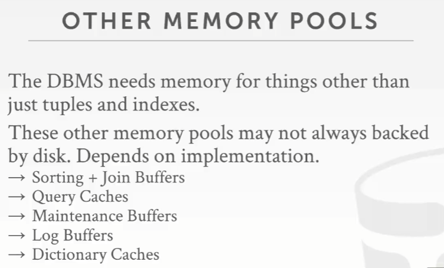

注: 本文首发我的 b 站专栏文章CMU 15-445/645-笔记-05-Buffer池与内存管理

课程目标
上节课回顾
画红线的部分
- 想要能够去支持超出我们所拥有的内存容量大小的数据库
- 最小化在磁盘上执行查询时速度缓慢带来的影响
数据库 Workloads
HTAP（混合事务分析处理 Hybrid Transaction Analytical Processsing），是几年前 Gartner 发明的一个新流行词，它所描述的是既做 OLTP 又做 OLAP 的数据库系统
Bifurcated Environment
一般数据库的标准配置是这样的
- 前端 OLTP 数据库
后端 OLAP 大型数据仓库（back-end data warehouse）
这两者有时候被称为 Data Silo，即数据孤岛，数据存储相互独立，彼此之间不会真的交流
然后就可以进行 ETL（Extract Transform Load） 的操作，即将业务系统的数据经过抽取、清洗、转换之后加载到数据仓库的过程
以 Zynga 这家游戏公司为例，Zynga 收购了很多游戏初创公司，比如 FarmVille，它买下这些公司时，会去运行他们自己的前端 OLTP 数据库，只有他们将这些数据放入他们的后端大型仓库时，他们才能更高地分析出怎么做才能让你们在 FarmVille 上买东西
等后端 OLAP 数据仓库拿到分析后的信息数据后，就推到前端 OLTP 数据库中，并对外暴露

所以 HTAP 基本上在做一些平常只能在 OLAP 端所做的，可以直接在前端的 Data Silo 里面做这些，并且不用等数据传回到后端数据仓库了
这可以用 MySQL、PostgreSQL、mongoDB 来做前端数据库，可以用 Hadoop、Spark、Greenplum、Vertica 来做后端数据仓库
数据库存储
- 空间管理
这里指的是在哪里将数据写入磁盘 - 时间管理
这里指的是什么时候将 pages 读入内存
- 空间管理
面向磁盘的 DBMS
如果执行引擎在请求 page 时，内存中没有足够的空余来容纳我们需要的那个 page，这个时候就必须要决定哪个 page 进行写出操作，即 “remove”，而这正是 Buffer 池要解决的问题
系统的其他部分无须知道或者关系哪些东西在内存里，哪些东西不在，它只会等它需要拿到的东西，然后返回一个指针给到执行引擎
Buffer 池的组织
Buffer 池需要我们在数据库系统内部分配一块很大的内存，就是调用 malloc，拿到一些内存块，并将从磁盘中读取到的所有的 pages 都放到这个里面去。注意这段内存完全是由数据库系统来控制，而不是交给操作系统来做。
然后，这段内存区域被分成一个个固定大小的 chunk，它被称为 frame，frame 对应的是之前提到的 slot（slot 存储的虽然是对应 tuple 的 offset，但对外来看，相当于指代了一段存储区域），即 Buffer 池内存区域中的区块或者是 chunk，frame 里存放的是 page
当数据库系统发出一个请求 page 的请求，会发生啥呢？

首先会去看 Buffer 池中有没有这个 page，如果没有就拷贝一份到内存中，也就是其中一个 frame
注意 Buffer 池中 page 的顺序可能和磁盘上的顺序不一致，所以在此之上，就需要一个额外的 indirection 层，如果需要某个特定的 page，只要通过这个 indirection 层就能知道这个 page 在哪个 frame 中
Buffer 池元数据
page 表其实就是一个 hash 表，用来跟踪在内存中有哪些 page，可以通过 page 表和 page ID 找到在 frame 中对应的那个 page
数据库系统必须维护一些额外的元数据，以此来跟踪当前 Buffer 池中的 page 发生了什么
要跟踪的有俩
- Dirty Flag
这个 flag 表示的是，从磁盘读取到这个 page 后，这个 page 是否被修改过，比如查询或者事务对其修改过 Pin/引用计数
这个表示 想要使用该 page 的当前线程数量/正在对该 page 进行的 查询 的数量（这里又联想到 GC），page 目前还在被强引用，说明此时不应该将 page 写出到磁盘上比如在上图的例子中，如果不想让 page3 从 Buffer 池中移除掉，就把他 Pin 住
如果想要去读取一个不在当前内存中的 page2，那么就要在这个 page 表中加上一个 latch 锁，这样 Buffer 池就可以从磁盘中拿到这个 page2，然后更新 page 表里面指向 page2 的指针。为什么要加锁？因为同一时间可能有多个线程在跑，资源会有冲突
这也解释了为什么 mmap is suck，因为操作系统不会管你是不是在用 page2，它可能会提前将 page2 写出到磁盘
- Dirty Flag
Locks vs. Latches
以数据库的语义来讲，lock 是某种高级逻辑原语（high-level logical primitive），它会去保护数据库中的逻辑内容，比如 tuple、表以及数据库，事务在运行时会去持有这个 lock
latch 是一种低级保护原语（low-level protection primitive），它用来保护数据库系统内部的关键部分，比如物理数据结构、内存区域
在执行操作 （operation）期间，数据库会持有这些 latch，用来保护某些东西
如果在执行操作时，没能拿到对应的 latch，那么这个操作就会被中止，同时也不需要关心回滚问题
在操作系统的语义里面，latch 就相当于 mutex，mutex 也被用来保护一些关键内容，但是在 latch 中所使用的 mutex 实现其实是 spin lock（自旋锁）
Page 表 vs. Page 目录
Page 表是内存中的内部映射，它将 page ID 映射到它们在 Buffer 池中 frame 的位置，这个没必要做持久化，但必须要保证它是线程安全的。因为如果系统崩溃了，恢复后 Buffer 池里面的东西丢了就丢了，对数据库而言没有影响
Page 目录是用来找到 page 在数据库文件中的位置，对 Page 目录做出的所有改变都必须持久化，它们必须要被写到磁盘上。因为如果系统崩溃了，恢复后我们需要知道在哪里可以找到之前的 page
Buffer 池内存分配策略
全局策略
即这个策略能使整个要试着执行的 workload 都受益，比如查看所有运行在该系统上的查询/事务，选择哪些内容应该存储到内存局部策略
针对每个单个查询/事务，让其进行得更快的最佳方法大多数数据库系统可能会试着尽量同时采取全局和局部优化策略
Buffer 池优化
多 Buffer 池
可以在每个 Buffer 池上使用局部策略，这样就可以为放入的数据进行量身定制，比如让每个表都有一个 Buffer 池，当处于以下情况时，
- 在某些表中可能会进行一系列的循环扫描
- 在某些表中可能会进行索引查询
某个时刻需要跳转到某个 page 上（表内查询）
就可以根据这 2 种 workload 类型来决定使用不同的替换策略，比如让一个 Buffer 池处理索引，另一个 Buffer 池处理表
这么做同时也会减少那些尝试访问 Buffer 池的不同线程之间争抢 latch 锁的情况，比如，如果有多个 page 表，那么每条线程就能在同一时间访问不同的 page 表，因此它们就不会去争抢这些 latch（这我是有点怀疑的，是不是一定要 page 表的数量要大于线程数？？）
Oracle、DB2、Sybase、SQL server、Informix 这些全都支持多 Buffer 池， MySQL 的做法是，对于一个给定的 page ID，它会通过 round-robin hash 来判断这个数据在哪，放在哪个 Buffer 池里面。
有 2 种方式来使用这些
Buffer 池通过管理和维护数据库对象（Database Object）的 record ID，来管理数据库对象，即将数据库对象的 record ID 维护到一个列表中，这样就能根据每个 ID 找到对应的对象条目。通过 record ID 能找到 Object ID、page ID、slot number，通过 Object ID 能找到对应的 Buffer 池，通过 page ID 和 slot number 就能找到对应的数据
- 传入 record ID，通过 hash 来确定数据在 Buffer 池中的位置，通过取模来确定在哪个 Buffer 池里
Pre-Fetching（预取）
当处理完 page1 后，如果要继续请求 page2 或 page3 的数据，通过 pre-fetching 的方式，它已经在 Buffer 池中了，那么也无序停顿去从磁盘中把相关 page 取出然后写入到 Buffer 池内存中
另外，mmap 也是可以做到 pre-fetching 的
有一个 index game 例子（这个例子主要是讲操作系统怎么去做 pre-fetching 的）
index-page3 和 index-page5 它们在磁盘上并没有连续排列在一起，所以操作系统会尝试去 pre fetch page2 和 page3，但实际上并不需要 page2，需要的是 page5，但是还没有 pre fetch 到它。出现这个的原因是操作系统并不知道查询要去做什么，因为操作系统做的是 索引扫描（像例子中的树那样的一个结构，需要 dfs 遍历），它不像数据库系统那样做的是 按照顺序扫描
而对于 Buffer 池的 pre-fetching 来讲，这不是没有代价的，因为需要跟踪一些额外的元数据
扫描共享 scan sharing
这个优化策略想的是，查询之间可以利用彼此的结果，某个查询可以复用另一个查询从磁盘中读取到的数据，也可以将该数据用于其他的查询
但这和结果缓存（result caching）的方式不同，结果缓存指的是，当运行完全相同的查询时，计算出了某些结果，然后将这些结果缓存起来，遇到相同的查询时就再展示出来，而不是去重新执行这个查询
而扫描共享的工作方式是，当允许将多个查询附加到一个单个游标（这个游标指的是上文所说的移动的 Q1 箭头 →）上，即将这些查询注册到这个游标数据结构管理的一个集合中时，扫描 pages，并将它们放入 Buffer 池中
这有点像是那种 发布/订阅 的模式：我想知道你是否拿到了一个新的 page，然后你就可以去通知可能在等待这个 page 的线程，即便这个线程并不是真的要去拿到这个 page 去读取数据
DBMS 开始工作后，如果一个查询开始了一次扫描，然后它意识到这里有另一个查询也在做相同的扫描，它就将它自己附加到第一个查询的游标上，当这个查询拿到 page 时，它就通知我们该查询拿到了这个 page，我们也就可以去访问它了
所以第二个查询出现的位置必须被跟踪到，记录好这个位置后，拿到数据即可返回，然后继续走原来剩余的逻辑
知道了第一个查询结束时的游标位置，如果那里可能还有其他数据需要回去读取，就能直接回到之前那个点上，去获取剩余的数据
这项技术只有 DB2 和 SQL server 完全支持，而 Oracle 支持一种基本的扫描共享技术，称之为游标共享（Cursor Sharing），但只有当有 2 个查询在同一时刻执行时，它才会有效
两个相同查询的例子
假设第一个查询 Q1，它要计算 SUM，那么它需要从磁盘中遍历整个 pages，然后将遍历的 page 写出到 Buffer 池中，按照惯例，此时 Buffer 池中已满，它需要将 page0 移除掉，并替换上 page3
替换成功后，继续扫描，但是这个时候，第二个查询 Q2 出现了，它也想从磁盘中遍历整个 pages
在没有扫描共享的情况下，就会出问题，因为此时 Buffer 池已满，对于 Q2 来讲它需要的是 Buffer 池中的 page0，但是刚刚 page0 已经被 Buffer 池扔回到磁盘里面去了，那么 Q2 这个查询就 gg 了
所以在有扫描共享的情况下，Q2 只需要跳到 Q1 目前所在的位置，并且去读取 Q1 要读的相同的数据，并计算出 Q2 所找的那部分数据的结果
而当 Q1 结束时，Q1 的游标就消失了，Q2 查询从头开始
直到遍历到 page2，Q2 结束，这就是 Q2 扫描的路径
那么每个查询在读取数据的同时也在计算中间结果，它们也需要一块内存区域去存放这些数据，而这个内存区域跟这个 Buffer 池是分开的，但通常情况下，这块内存区域也可以由一个 Buffer 池所支持。但它到底是在一个全局 Buffer 池中还是在这个查询所私有的 Buffer 池中，还得取决于具体实现
如果在扫描 Buffer 池中的数据，并更新中间结果时，可能会遇上内存溢出，为了腾出空间保留中间结果，会将 Buffer 池中的 page 数据刷出到磁盘
通过 locks 可以对一些 pages 进行跟踪管理是否允许对这些 pages 进行读写，或者时将 locks 应用于一些数据库对象上
如果将 Q2 的查询修改下，让它去计算 100 条数据的平均值
这里并没有明确说这里要的是否是 前 100 个 tuple 的数据。因为现在 Q2 的游标是在 page2 处，所以遍历可以从 page3 开始，然后看下这前 3 个 page 中前 100 个 tuple，计算出结果。但如果从 page0 开始扫描计算，那可能会得到一个不同的结果。但因为关系模型中数据库是无序的，所以根据关系模型，这是没问题的。
Buffer 池 Bypass
思路是，分配一小块内存给执行查询的那条线程，当它从磁盘中读取 page 时，如果该 page 不在 Buffer 池中，那么它将会把这个 page 从磁盘写入本地内存而不是 Buffer 池。当查询完成时，所有的这些 page 都会被丢弃掉。
这么做是为了避免去 page 表中进行查询所带来的开销，因为 page 表中对应的条目是带锁的。
在 Informix 中，这叫做 “Light Scans”，主流数据库都支持它
注意，只有当操作的是中间结果以及查询扫描的量不大的场景才适用
操作系统 Page 缓存
数据库所有的磁盘操作都是通过最底层的 OS API 来做的，比如 fopen/fread/fwrite 等。默认情况下，操作系统会维护它自己的文件系统缓存，比如，当从磁盘读取一个 page 时，OS 会去在它的文件系统缓存中保存一份副本，写入到 Buffer 池中时，里面就会有另一个副本。但大部分数据库系统不会让 OS 对要读取的文件进行任何缓存处理，因为它们要自己管理内存。
但是，唯一利用操作系统 page 缓存的就是 PostgreSQL，因为从它们工程师的角度看，他们就无须再管理一个额外的缓存，他们依然有他们自己的 Buffer 池，但没有那么大，这样就不会去使用系统中所有的内存。但像 MySQL 或 Oracle 就会
htop
Mem 部分，橙条代表操作系统的 page 缓存，绿条代表该计算机上运行的进程的实际使用物理内存
使用如下命令清除 OS page 缓存
sync; echo 3 > /proc/sys/vm/drop_caches
可以看到机器使用的总内存已经下降到 3GB 左右
顺便，如果 Buffer 池的大小小于要读取的数据库表的大小的话，那么在 Buffer 池中命中 pages 的数量，要小于在磁盘中读取 pages 的数量
比如上图中，从磁盘读取的 27932 >> Buffer 池中的 16316
这取决于 Buffer 池的大小，如果把 Buffer 池大小设置（下图为修改 PostgreSQL 的配置文件，修改项为 shared_buffers）为比要读取的数据库表大小还大，那么
Buffer 池就会命中（hit）全部的 pages，因为给了数据库系统合适大小的内存量，对于这个查询而言，就没必要去从磁盘拿 page 了
hit 的意思是找的东西在 Buffer 池中的数量
pg_prewarm 会告诉数据库系统去读取磁盘上该表的所有数据，并将他放入 Buffer 池中（SELECT pg_prewram(‘testreals’)）
为什么其他主流数据库系统不依赖操作系统 page 缓存呢？因为假设在 OS page cache 中放入一个 page，而在 Buffer 池中放入该 page 的一个副本，如果这个时候要对 Buffer 池中修改这个 page 部分，那么 OS page cache 和 Buffer 池中的 page 就不再是同一个东西了，OS page cache 中存的就是老 page 数据，那么这个数据就冗余了。
同时，不同数据库支持的操作系统也不一样，如果都用操作系统 page 缓存，那么可能出现性能上的差异，为了保证跨 OS 间的一致性，必须要把这个交给数据库系统本身来管理
如果使用的是 Direct IO，这就会告诉操作系统不要去缓存任何东西，这样数据库系统就始终得跑到磁盘上去获取数据了
操作系统 page 缓存是磁盘和数据库之间的东西
Buffer 替换策略
如果现在需要讲一个 page 放入内存中，但是内存里没有空间放它，这个时候该怎么办呢？
在替换策略中，最重要的就是 准确性，因为要确保移除的 page 是在未来不太会被用到的那些 page
- 运行某些算法来弄清楚该移除哪个 page 会比读取 page 时所花的时间要长
跟踪大量额外的元数据也会带来开销，因为可能会出现跟踪的元数据的体积比 page 本身还要大
非常高端的、价格很昂贵的企业级数据库和开源数据库之间有什么区别呢？
高端数据库拥有非常复杂的替换策略，它们会跟踪统计 page 的相关使用数据，会尝试从查询实际所做的事情中推断出最好的决策
- 开源数据库的某些比较新的系统中，它们在这方面并没有做的像高端数据库那么好，它们就只能做些简单版的东西了
Least-Recently Used（LRU）
一种使用起来超简单的技术就是 LRU，即跟踪一个 page 最后一次被访问时的时间戳，然后只要看哪个 page 拥有的时间戳是最老的，哪个就应该要被移除掉
那么此时就可以维护一个单独的数据结构，比如队列，根据 page 的时间戳进行排序
Clock
一个 LRU 的近似算法，就是 Clock在 Clock 中，没必要去追踪每个 page 的时间戳，相反，唯一需要去跟踪的信息是每个 page 的标志位（reference bit），它会告诉你自从上次检查过该 page 后，这个 page 是否被访问了，所以你需要将你的 page 弄成一个环形的 Buffer，like a clock。在一圈时钟这个时间段内，如果标志位没有变化，就可以从 Buffer 池中移除这个 page。
假设某些查询访问了 page1，那么此时 page1 的标志位会被设置成 1，注意这里无论多少查询访问过这个 page1 多少次，这里的值始终都被设置为 1，因为标志位不是计数器。
当现在需要去移除 page 时
clock 会从 page1 这个地方开始走起来，当看到 page1 的标志位为 1 时，说明这个 page1 被访问过，所以不应该去移除掉 page1，但现在只是将 page1 的标志位设置成 0。然后走向下一个 page2。此时它发现 page2 的标志位是 0，就可以将 page2 移除掉（因为它不是 1，如果是 1 会被先设置成 0 然后遍历下一个 page）
使用 Clock 算法的优点是，在移除 page 时，不会精确地移除最近最少使用的那个 page。
在某些查询上表现得很好，比如点查询（point query）时访问单个东西
问题
但 Clock 和 LRU 都容易受到 sequential flooding 带来的影响
这意味着，当进行读取每个 page 的特殊扫描时，这可能会污染 page 缓存，可能会将接下来真正要用到的 page 从 Buffer 池中移除掉。因为它扫描并读取了一堆 page，所有的这些 page 的时间戳都会比实际想要的那个 page 要新。因为要被移除的那些 page 应该是 最近 被使用的，而不是 最近最少 被使用的
例子
Q1 是一个点查询，它读取了 page0，并放入了 Buffer 池中
接着有另一个遍历查询 Q2，它会读取所有的 page
现在想要在 Buffer 池中给 page3 分配一个空间，如果用的是 LRU，那么它会指出 page0 是 Buffer 池中最近最少使用的 page，那么移除掉 page0，放入 page3
但是在 workload 中，会有不断地去执行类似于 Q1 那样的查询
注意上图中，在 Disk Pages 上的红色 Q2 应为 Q3
不断的执行 Q3，它要读的是 page0。但是之前 page0 已经从 Buffer 池中被移除掉了，这样就 fucked up 了。
而真正应该要被移除的应该是 page1 和 page2，因为 Q2 会去读取更多的数据，而其他查询（Q1 和 Q3）并不会到 Buffer 池中读取这些数据（page 0 之后的 page）
更好的策略：LRU-K
思路是，将最近使用过 1 次的判断标准扩展为最近使用过 K 次，没有达到 K 次访问的数据并不会被缓存。访问记录不能无限记录，当访问次数达到 K 次后，将 数据索引 从 历史队列 移到 缓存队列 中
相比于 LRU 比较时间戳，LRU-K 看的是时间戳时间的间隔，统计哪一个 page 的上一次和下一次的访问的时间间隔最长，那么哪一个 page 就是最近最少使用的
更好的策略：本地化（Localization）
使用多个 Buffer 池，让每个查询本地化，即每个 Buffer 池能对应住一个查询，那么对于单个查询来讲，只会去移除对于这个查询而言最近最少使用的那个 page，而不是对于整个查询而言最近最少使用的那个 page
更好的策略：优先级提示（Priority Hints）
有索引时，就知道查询时如何进行扫描的，也能知道哪些不同的 page 被访问了，可以使用这个信息来判断该移除哪些 page
例子，假设有一个 Insert 的操作 Q1，对应的表里面有一个全局的计数器，每次 Insert 时，它就会加 1
注意这里索引的存储结构一般是类似 B+ Tree 的结构

如果根据这个 id 从小到大排序，意味着遍历始终是沿着树的右侧往下走，去拿到这些 page 的
因此这个时候就应该提示 Buffer 管理器，这些被红色框圈起来的 page 就应该试着待在内存中
处理 Dirty Pages
在 page 上有一个 dirty bit，它表示自从上次它被放入 Buffer 池中后，是否还有查询对该 page 的内容做了修改。
快的方式：如果一个 page 在 Buffer 池中不是 dirty 的，直接 drop 掉它就好
慢的方式：如果一个 page 在 Buffer 池中是 dirty 的话，在将该空间重新用于新的 page 之前，必须将这个 page 安全地写回磁盘而这是有 trade-off 的，因为一大堆不是 dirty 的 page，可能最近需要用到它，所以直接 drop 掉会带来后面重新读取磁盘并写入内存的 I/O 影响。
而如果不想要 drop 掉这些不是 dirty 的 page，那就要花点代价将 dirty page 从 Buffer 池中移除掉，然后复用移除掉的这些空间。但是这么做就需要 2 次磁盘 I/O 了，一次 I/O 是用来写出 dirty page，从 Buffer 池中移除，另一次 I/O 则是读取那个想要的 page（感觉和上面那个 drop 非 dirty page 的情况差不多）
后台写操作（Background Writing）
为了避免 必须立即 将 page 写出以便在 Buffer 池中释放可用空间的问题，在数据库系统中有一条执行定时任务的线程，它会在 Buffer 池中找出那些被标记为 dirty 的 page，将它们写出到磁盘上，然后可以将这些 page 标记为 clean。那么当使用替换策略去决定该移除哪个 page 时，就有一堆 clean 的 page 可以 drop 掉了。
但是这个操作要小心，因为在该 dirty page 对应的修改操作写入日志之前，我们不希望将这些 dirty page 写出到磁盘
同样的，这也是 mmap 无法做到的事情
其他内存池

结论
这节课的重点在于我们该如何去管理内存并做得比 OS 更好